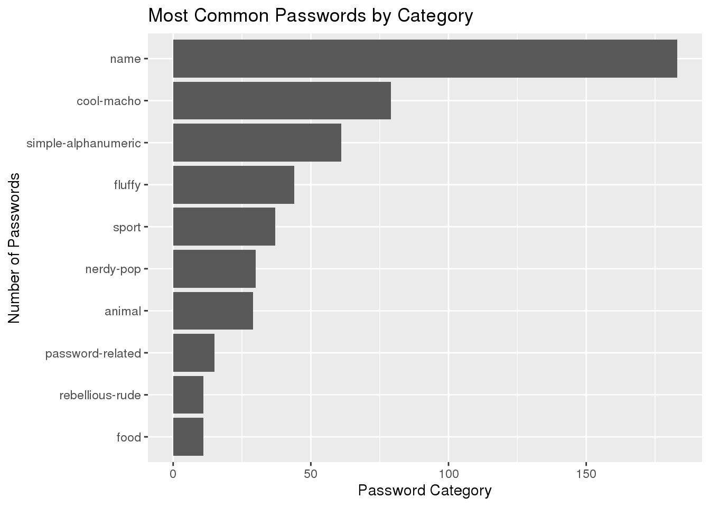
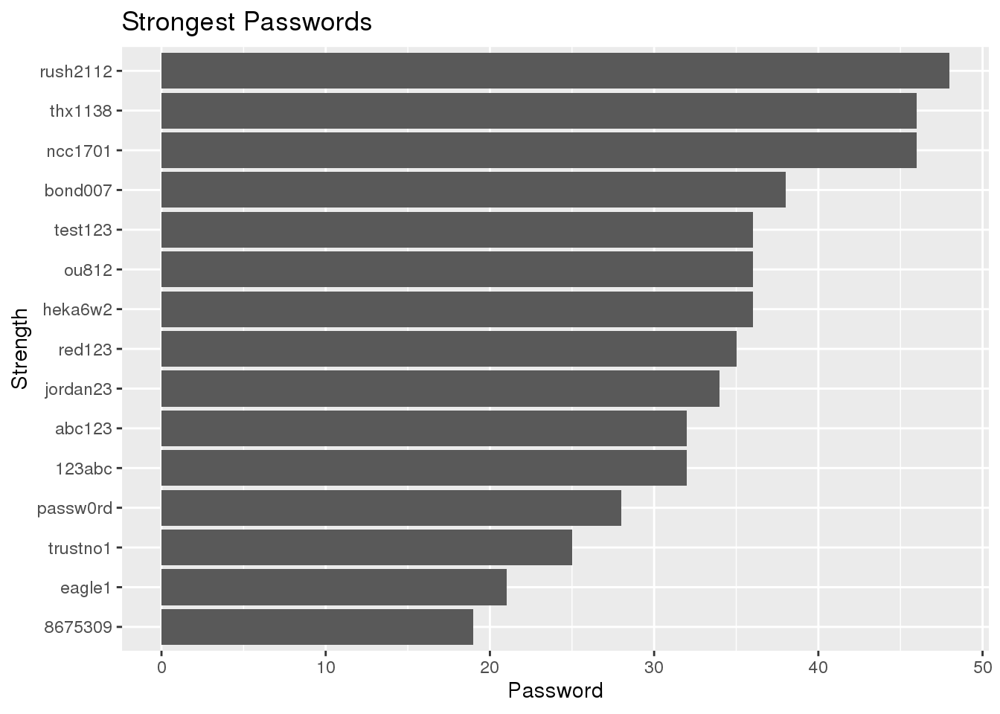
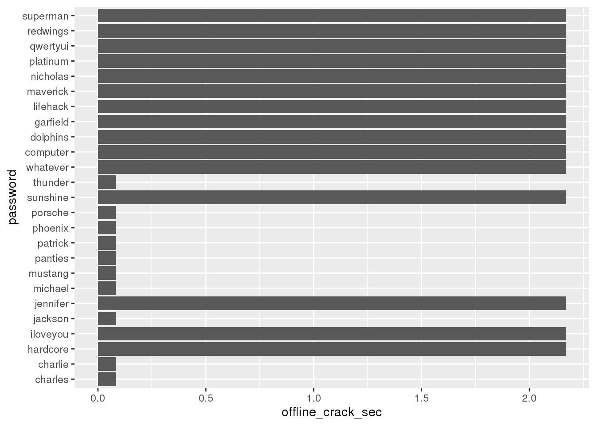

The password data set from tidytuesday contains a list of many commonly used passwords.
library(tidyverse)## ── Attaching packages ─────────────────────────────────────── tidyverse 1.3.0 ──## ✓ ggplot2 3.2.1 ✓ purrr 0.3.3
## ✓ tibble 2.1.3 ✓ dplyr 1.0.2
## ✓ tidyr 1.0.0 ✓ stringr 1.4.0
## ✓ readr 1.3.1 ✓ forcats 0.4.0## ── Conflicts ────────────────────────────────────────── tidyverse_conflicts() ──
## x dplyr::filter() masks stats::filter()
## x dplyr::lag() masks stats::lag()tuesdata <- tidytuesdayR::tt_load('2020-01-14') ## --- Compiling #TidyTuesday Information for 2020-01-14 ----## --- There is 1 file available ---## --- Starting Download ---##
## Downloading file 1 of 1: `passwords.csv`## --- Download complete ---tuesdata <- tidytuesdayR::tt_load(2020, week = 3)## --- Compiling #TidyTuesday Information for 2020-01-14 ----## --- There is 1 file available ---## --- Starting Download ---##
## Downloading file 1 of 1: `passwords.csv`## --- Download complete ---passwords <- tuesdata$passwords
passwords ## # A tibble: 507 x 9
## rank password category value time_unit offline_crack_s… rank_alt strength
## <dbl> <chr> <chr> <dbl> <chr> <dbl> <dbl> <dbl>
## 1 1 password passwor… 6.91 years 2.17 1 8
## 2 2 123456 simple-… 18.5 minutes 0.0000111 2 4
## 3 3 12345678 simple-… 1.29 days 0.00111 3 4
## 4 4 1234 simple-… 11.1 seconds 0.000000111 4 4
## 5 5 qwerty simple-… 3.72 days 0.00321 5 8
## 6 6 12345 simple-… 1.85 minutes 0.00000111 6 4
## 7 7 dragon animal 3.72 days 0.00321 7 8
## 8 8 baseball sport 6.91 years 2.17 8 4
## 9 9 football sport 6.91 years 2.17 9 7
## 10 10 letmein passwor… 3.19 months 0.0835 10 8
## # … with 497 more rows, and 1 more variable: font_size <dbl>The data set may sort the data set on most common, but what about easiest to crack. Probably the first 10, since they are the most common, but what about the rest?
crack <- passwords %>%
tail(497) %>%
filter(time_unit == "minutes") %>%
arrange(value) %>%
mutate(seconds = value*60)
seconds <- passwords %>%
tail(497) %>%
filter(time_unit == "seconds") %>%
arrange(value)
seconds## # A tibble: 10 x 9
## rank password category value time_unit offline_crack_s… rank_alt strength
## <dbl> <chr> <chr> <dbl> <chr> <dbl> <dbl> <dbl>
## 1 20 2000 simple-… 11.1 seconds 0.000000111 20 0
## 2 45 6969 simple-… 11.1 seconds 0.000000111 45 4
## 3 77 1111 simple-… 11.1 seconds 0.000000111 77 0
## 4 277 5150 simple-… 11.1 seconds 0.000000111 278 8
## 5 315 2112 simple-… 11.1 seconds 0.000000111 316 1
## 6 316 1212 simple-… 11.1 seconds 0.000000111 317 4
## 7 325 7777 simple-… 11.1 seconds 0.000000111 326 0
## 8 372 2222 simple-… 11.1 seconds 0.000000111 373 0
## 9 374 4444 simple-… 11.1 seconds 0.000000111 375 0
## 10 430 1313 simple-… 11.1 seconds 0.000000111 431 4
## # … with 1 more variable: font_size <dbl>crack## # A tibble: 49 x 10
## rank password category value time_unit offline_crack_s… rank_alt strength
## <dbl> <chr> <chr> <dbl> <chr> <dbl> <dbl> <dbl>
## 1 410 11111 simple-… 1.85 minutes 0.00000111 411 0
## 2 34 test passwor… 7.92 minutes 0.00000475 34 4
## 3 35 pass passwor… 7.92 minutes 0.00000475 35 3
## 4 42 love fluffy 7.92 minutes 0.00000475 42 6
## 5 67 sexy cool-ma… 7.92 minutes 0.00000475 67 6
## 6 155 mike name 7.92 minutes 0.00000475 155 6
## 7 169 john name 7.92 minutes 0.00000475 169 6
## 8 189 blue fluffy 7.92 minutes 0.00000475 189 6
## 9 198 asdf simple-… 7.92 minutes 0.00000475 199 6
## 10 216 jack name 7.92 minutes 0.00000475 217 6
## # … with 39 more rows, and 2 more variables: font_size <dbl>, seconds <dbl>We can see with the two data sets that a lot of the passwords that are easily crackable have around the same value to be cracked.
The passwords data set also gives each password a category, as in whether it is password-related, an animal, or simple-alphanumeric. What category is the most commonly used?
dat <- passwords %>%
filter(!is.na(category)) %>%
group_by(category) %>%
summarise(count = n())## `summarise()` ungrouping output (override with `.groups` argument)ggplot(data = dat, aes(x = category, y = count)) +
geom_bar(aes(reorder(category, count)),stat = "identity") +
coord_flip() The category commonly used and is easiest to crack seems to be the name category, it almost doubles the cool-macho category. This makes sense, peoplelike to use names when they are making their password. Another interesting thing is that simple-alphanumeric passwords are also at the top of the list. This is probably due to them being easy to remember, things like 1111 and 2222 and 1234 can be easily written down and remembered. Phones use those passwords a lot, in fact.
We know which categories are the most common and the easiest ones to crack, but what about the strongest password? Each password in the data set comes with their own separate strength score, so which one is the strongest?
strength <- passwords %>%
arrange(desc(strength)) %>%
head(15)
weak <- passwords %>%
arrange(desc(strength)) %>%
tail(492) %>%
head(25)
ggplot(strength, aes(x = password, y = strength)) +
geom_bar(aes(reorder(password, strength)), stat = "identity") +
coord_flip()
ggplot(weak, aes(x = password, y = offline_crack_sec)) +
geom_bar(aes(reorder(password, strength)), stat = "identity") +
coord_flip()
strength## # A tibble: 15 x 9
## rank password category value time_unit offline_crack_s… rank_alt strength
## <dbl> <chr> <chr> <dbl> <chr> <dbl> <dbl> <dbl>
## 1 336 rush2112 nerdy-p… 92.3 years 29.0 337 48
## 2 149 ncc1701 nerdy-p… 2.56 years 0.806 149 46
## 3 197 thx1138 nerdy-p… 2.56 years 0.806 198 46
## 4 321 bond007 nerdy-p… 2.56 years 0.806 322 38
## 5 359 ou812 nerdy-p… 17.3 hours 0.000622 360 36
## 6 395 heka6w2 simple-… 2.56 years 0.806 396 36
## 7 478 test123 simple-… 2.56 years 0.806 480 36
## 8 344 red123 simple-… 3.7 weeks 0.0224 345 35
## 9 406 jordan23 sport 92.3 years 29.3 407 34
## 10 13 abc123 simple-… 3.7 weeks 0.0224 13 32
## 11 463 123abc simple-… 3.7 weeks 0.0224 465 32
## 12 500 passw0rd passwor… 92.3 years 29.0 502 28
## 13 26 trustno1 simple-… 92.3 years 29.0 26 25
## 14 407 eagle1 simple-… 3.7 weeks 0.0224 408 21
## 15 274 8675309 nerdy-p… 3.09 hours 0.000111 275 19
## # … with 1 more variable: font_size <dbl>weak## # A tibble: 25 x 9
## rank password category value time_unit offline_crack_s… rank_alt strength
## <dbl> <chr> <chr> <dbl> <chr> <dbl> <dbl> <dbl>
## 1 22 superman name 6.91 years 2.17 22 10
## 2 66 computer nerdy-p… 6.91 years 2.17 66 10
## 3 111 maverick cool-ma… 6.91 years 2.17 111 10
## 4 293 nicholas name 6.91 years 2.17 294 10
## 5 305 qwertyui simple-… 6.91 years 2.17 306 10
## 6 308 dolphins animal 6.91 years 2.17 309 10
## 7 381 lifehack cool-ma… 6.91 years 2.17 382 10
## 8 389 platinum cool-ma… 6.91 years 2.17 390 10
## 9 398 garfield name 6.91 years 2.17 399 10
## 10 450 redwings sport 6.91 years 2.17 452 10
## # … with 15 more rows, and 1 more variable: font_size <dbl>We can see that in the top 15 strongest passwords on the list there is a trend. For the first few, the strongest passwords are simple passwords with just a word and then numbers after it. This makes sure that the password is easy to remember but hard to break.
#Conclusion
TBD